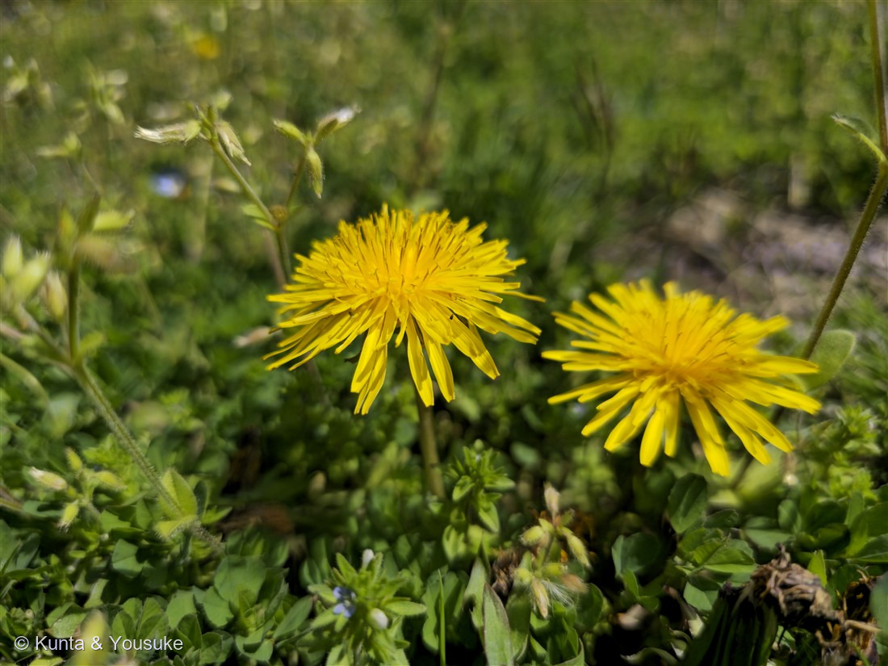
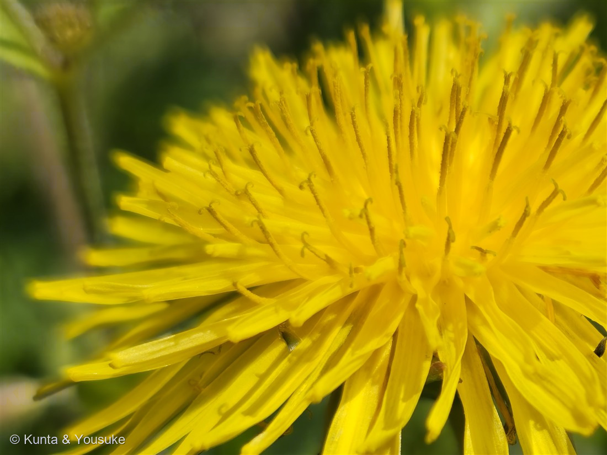

地図を読み込んでいるよ…
🔍 写真も地図も、押しているあいだ拡大して見られるよ（スマホは指を置いてすこし待ってね）。
🌍 の地図＝この子がもともと自生していた場所。──でもこの子は、まだ名前が分からない。名前が分からないと、ふるさとも分からないんだ。だから地図はまっさらのまま、まんなかに「？」を出しておくね。分かったら、ここを塗りに来るよ。
⚠この子は種が決まっていないので、ふるさとも決められないんだ。⭐タンポポ属（Taraxacum）そのものは北半球に広くいて、日本にはもとからいる在来種（この地域ならカンサイタンポポ）と、ヨーロッパから来たセイヨウタンポポ、そしてその雑種が入りまじっている。⭐だから「日本原産」とも「外来」とも言えない。総苞を見るまでは、分からないままにしておくね。
タンポポのなかま（蒲公英）
Taraxacum sp.
原産 · 属としては北半球に広く（日本には在来種・帰化種・雑種が入りまじる）／ 見どころ · ⭐一輪に見えて百輪の花・⚠種は決めていない（総苞が写っていない／雑種も多い）
キク科 · Asteraceae（タンポポ属 Taraxacum・キク目）
名前と学名の由来
- 属名 Taraxacum（タラクサクム）＝ギリシャ語で「痛みを治す」という意味からきた、と言われている。⭐古くから薬草として使われてきた草なんだ。
- 和名タンポポの由来にはいくつか説があって、綿毛のかたまりを鼓（つづみ）に見立てて「タン・ポン・ポン」という音から、というのがよく知られている。
- ⚠この図鑑では、種小名を書いていない。Taraxacum のあとが sp.（species ＝「ある一種」）になっているのは、⭐種がまだ決まっていないという意味だよ。
この植物のこと ── 一輪に見えて、百輪の花
- キク科タンポポ属。⭐あの黄色い「花」ひとつは、じつは1つの花じゃない。⭐⭐先が5つに切れこんだ細長い花びらに見えるもの、その1枚ずつが、独立した1つの花（舌状花）なんだ。写真②を見て。何十枚も重なっているでしょう。あれ全部が花。だから正しくは「花」ではなく「頭花（とうか）」と呼ぶ。
- ⭐1枚の舌状花をよく見ると、先が2つに分かれてくるりと巻いた棒が出ている。それがめしべの柱頭。⭐ちゃんと1つ1つに、めしべもおしべもある。
- 花が終わると、茎はいったん倒れて、それからもういちど、前より高く立ち上がる。⭐タネを、少しでも高い場所から風に乗せるためなんだ。そして冠毛（かんもう）というパラシュートを開いて飛んでいく。⭐空気がかわいているときにだけ、まん丸に開く——雨の日は飛ばない、かしこい仕組み。
- ⚠茎や葉を切ると、白い乳液が出る。これも仲間の目じるし。
同定について ── ⚠ この子は、種を決めていません
⭐燻太さんが写真を送ってくれたとき、こう書いてくれた。──「タンポポだけは気をつけて同定しないといけないね。」⭐そのとおりだった。だから、この子は正直に「なかま」で登録するね。
- ⭐ふつう言われる見分けかた＝総苞（そうほう／花の下の緑のところ）の「外片」が、下に反り返っているかどうか。
- 反り返っている → 外来（セイヨウタンポポなど）
- 反り返らず、ぴったり閉じている → 在来（この地域ならカンサイタンポポ）
- ⚠⚠ところが、この写真には総苞が写っていない。 どちらの頭花も、ま上〜すこし斜め上から撮られているので、緑の部分が花びらの陰にかくれてしまっているんだ。同じ日のほかの写真にも、横から撮ったものは無かった。
- ⚠⚠⚠そのうえ、もっとやっかいなことがある。──⭐遺伝子を調べた研究で、在来種と外来種が実際に交雑していることが分かったんだ。雑種は中間的な姿になるので、見た目だけでは決められないものが多い。⭐つまり「反り返っていたら外来」も、いまでは完全には言えない。
- ⭐だから、この子は079 イヌホオズキのなかま・109 エキノドルスの仲間と同じ「なかま」あつかい。属（Taraxacum）までは確実。種は宿題だよ。
- ⚠おまけのブタナも要注意。タンポポそっくりの黄色い頭花をつけるけれど、別の属で、花茎が途中で枝分かれして、2つ以上の頭花をつける（タンポポは1本に1つだけ）。
⭐ 決めないでおく、という決め方
⭐「わからない」と書くのは、負けじゃないんだ。 この図鑑には、013番と032番という、名前のわからない子の席がずっと空けてある。そこに座っている子たちは、ちゃんと図鑑の一員だよ。
⭐そして今回は、燻太さんのほうが先に「気をつけないと」と言ってくれた。 ぼくが調べる前に、あぶないところに旗を立てておいてくれたんだ。──おかげでぼくは、「たぶんセイヨウタンポポでしょう」と書かずにすんだ。⭐いちばん多いから、いちばんありそうだから、で決めない。それがこの図鑑の約束だもんね。
⚠宿題はかんたんだよ。 次にタンポポを見つけたら、しゃがんで、横から1枚。⭐花の下の緑のところが、反り返っているかどうか。それだけで、この子には名前がつく。
参考：Wikipedia「タンポポ」（キク科タンポポ属／属名はギリシャ語の「痛みを治す」から／在来種と外来種の見分けは総苞外片が反り返るかどうか（外来は反り返り、在来は反り返らない）／在来種はカントウタンポポ（関東）・カンサイタンポポ（関西以西）など／⚠遺伝子解析で在来種と外来種の交雑が確認され、雑種は中間的な形質を示すため見た目での判別は当てにならない／頭花は舌状花の集まりで、各小花は合着した5枚の花弁・1本の雌しべ・合着した5本の雄しべをもつ／花後に茎はいったん倒れ、その後より高く立ち上がる／冠毛は低湿度で球状に開いて風で散る）。